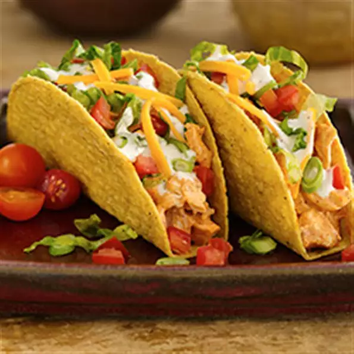

Pizza Recipe

Description
Terrific tacos start with a variety of creative toppings. Build your own and no two will be the same!
Ingredients
- 1 box old el paso taco shells
- cut up rotisserie chicken
- taco seasoning mix
- 1 cup ranch dressing
- shredded lettuce
- shredded cheese of choice
- salsa
- hot sauce
Steps
- Heat oven to 325 degrees F. Heat taco shells in oven as directed on box.
- Meanwhile, in medium microwaveable bowl, place chicken. Sprinkle with taco seasoning mix; toss gently to coat. Microwave uncovered on High 2 to 3 minutes or until hot. Stir in 1/2 cup dressing.
- Spoon warm chicken mixture into heated taco shells. Top with lettuce, tomato, cheese and onions. Drizzle with salsa and additional dressing.